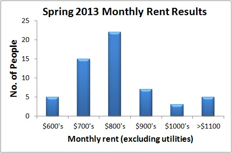

How and Where to Find Housing
Introduction
The housing market in the Bay Area can be very tight. Fortunately, the department works hard to help incoming students find places to live. If you elect to come to Berkeley, you will find that our department has many resources that will allow you to find not just a place to live, but also a place you want to live. Most students choose to return to Berkeley during the summer to find housing, but this is not always necessary.
We highly encourage everyone to get renter's insurance wherever they live since it is fairly inexpensive and could save you hundreds of dollars if something happens.
We also highly encourage students to get a bicycle (not an expensive one) to get to/from campus, shopping, fun activities, etc. even if you have a car.
What should you expect to pay?
In Spring 2013, GSAC conducted a housing survey of many graduate students and found:
- ~60% live with roommates in the department or other UC Berkley graduate students
- Most students live in 1-3 bedroom apartments or houses
- The average CBE graduate student pays appro. $850/month in rent, excluding utilities.
- Most students live within 2 miles of campus and walk or bike to work
Where to live
The majority of graduate students live inside Berkeley. A significant number of students, however, live in nearby cities and commute to campus. Descriptions of common housing locations follow.
One thing to remember is that Tan Hall is on the northeast side of campus (up the hill). You will most likely have to go up a hill of some sort to get to College of Chemistry buildings though some newer buildings specifically for research are found on west side of campus along Oxford.
1. North/West Berkeley
- "Gourmet Ghetto" area, lots of restaurants
- Popular with graduate students
- Many houses in this area
- ~20-30 minute walk to campus
2. South Berkeley (Ashby area)
- Many houses in this area with yards
- Popular with graduate students
- ~20-30 minute walk to campus
3. Southside/College Ave area (Berkeley)
- Most popular with undergraduate students
- Mostly apartments/dorms
- Not as quiet/safe as other areas of town
- Easy walk/bike to campus
4. El Cerrito
- Two BART stations that connect to downtown Berkeley
- 20-30 minute bike to/from campus on side streets
- Rent typically a $100-$150 less per person than other areas
- A few bus routes connect to the Berkeley area
- Quiet, safe community.
- Not much commercial development.
5. Albany
- No BART stations, but a number of bus routes.
- Relatively easy bicycle commute
- Rents are comparable to El Cerrito
- Somewhat more commercial development
6. Kensington/Berkeley Hills/North Berkeley
- Very nice residential areas.
- Rental prices >$100 more than other areas
- Parking can be difficult
- Typically long walk (40min) to campus, biking or bus more feasible
7. Emeryville
- More commercially developed than other places
- Longer bike or bus commute than other areas
- Can be expensive
8. Elmwood (South Berkeley - College Ave)
- Very nice residential area
- Can be difficult (but possible) to find affordable rentals
- Close to BART
- Easy bus and biking options to get to campus.
How to find a place to live
If you plan to return to the area to look for housing, consider a couple of things. First, plan on spending a few days in the area so that you can do a thorough search of your housing options. Also, be sure to bring your financial information (credit report) and a list of references with you so landlords can run background checks, if needed. Also, be sure to bring your letter of acceptance to graduate school so they can verify your status. In addition, many current students would advise you not to come to Berkeley to look for housing until after July 4th so you can find units available on August 1st. Finally be prepared to pay a full month's rent for August, even if you're not moving in until mid-August. Also, keep in mind that many landlords will want to run credit checks when you apply for housing, and it is very common for tenants to pay a security deposit plus first and last month's rent upon signing a lease (up to $3000). Some landlords may charge an application fee.
Before each summer, GSAC will come up with a list of places that new first years can stay while they are looking for housing. We have plenty of people with couches, air mattresses, and sometimes extra rooms so you do not need to stay at a hotel to find housing for your first year. This information will probably be sent out to new first years early on in the summer including which grad students have space and when as well as their contact info.
There are three common ways to find housing:
- Craigslist: Craigslist is a free online bulletin board that is widely used to list housing for rent. You can search by neighborhood, and even though there's usually a little more legwork involved, most students are able to find good housing deals using this service. It is the most common method used by grad students to find housing in Berkeley. Also try housingmaps.com which combines craigslist information with google maps.
- Cal Rentals: This is a UC sponsored service that maintains a listing of apartments and houses listed by landlords. The department will provide a Cal Rentals subscription to new students to help them find housing. This website also describes on-campus housing opportunities for students as well.
- Staying in touch with the department/GSAC: Very often, current graduate students change apartments over the summer. Sometimes it is possible for new students to move in, either by joining the current lease, or by starting a new one. Landlords like graduate students and are often willing to continue a lease to other grad students. As we find out about grad students leaving a unit available, we can forward this information to incoming students.
Graduate Student Housing and Cooperatives
Cal offers alternative housing through the University Students Cooperative Assoc. (USCA) in the form of co-op houses and apartments, which reduces the cost of living by dividing labor (cooking, cleaning, gardening, etc.) among members. A weekly five-hour commitment is expected in the houses, while the apartments require 6-12 hours per semester.
Co-op Housing:
- Graduate students can live in any of the co-op houses or apartments.
- The houses have what are called “open kitchens,” meaning that members may cook whatever and whenever they like; the kitchens/pantries are fully stocked with a variety of produce, frozen goods, non-perishables, and perishable goods.
- Houses and apartment complexes come with various amenities, such as house computers, televisions, periodicals, decks, hot tubs, etc.
- All bedrooms in apartments are single occupancy, while houses may vary.
- Residence in Hillegass Parker (HIP) House and The Convent is restricted to graduate and re-entry students only.
Cost:
- Costs include food and utilities.
- Extended/larger rooms are available at HIP House at an additional cost.
- Prices for the apartments vary depending on the number of occupants and location.
Detailed information about cooperative housing and specific houses, including eligibility, is available on the USCA website. To find out more about family living and university-owned graduate housing, please visit http://housing.berkeley.edu.
Graduate Student Housing:
Graduate Student Housing is available right next to the UC Berkley campus near the dorms. The Manville apartments and Ida Louise Jackson Graduate House are available for single students. There are also options for families. Please check out UC Berkley Graduate Housing for more information.
Other Important Resources
Questions
If you have any questions, please contact GSAC.